PLO 1Immunologic Tolerance — Core Definitions
- Immunogen
- An antigen that induces an immune response.
- Tolerogen
- An antigen that induces tolerance — functional unresponsiveness.
- Tolerance
- A state of unresponsiveness to a specific antigen. Depends on the conditions of exposure — strength of signal, co-signaling molecules.
- Self-Tolerance
- Tolerance specifically directed at self-antigens. The immune system's ability to avoid attacking its own tissues.
- Autoimmunity
- The failure of self-tolerance: the immune system reacts against self tissues. Affects 5–8% of the US population.
Two Locations of Tolerance Induction
Induced in self-reactive lymphocytes in generative lymphoid organs (thymus for T cells, bone marrow for B cells) during development.
Induced in mature lymphocytes that escape central deletion, in peripheral tissues and secondary lymphoid organs.
PLO 2 · PLO 3 · LO 1 · LO 2Central T Cell Tolerance
Central T cell tolerance is induced during maturation in the thymus. Thymocytes with strong affinity for self antigen either die or become T regulatory cells (Tregs).
Thymic Selection — Positive vs. Negative
| Selection | Location | Signal | Outcome | Purpose |
|---|---|---|---|---|
| Positive | Cortex | Low-affinity TCR–MHC interaction | Cell survives → becomes SP thymocyte | Ensure T cells can recognize self-MHC |
| Negative | Medulla | High-affinity TCR–self-antigen interaction | Deletion (apoptosis) or Treg development | Eliminate strongly self-reactive clones |
| Death by Neglect | Cortex | No MHC recognition | Cell dies | Remove useless clones |
Table quiz: thymic selection
- Which selection happens in the cortex and requires low-affinity TCR-MHC binding? Positive selection.
- What usually happens to a thymocyte that binds self antigen with high affinity in the medulla? Deletion by apoptosis, although some CD4 cells can become Tregs.
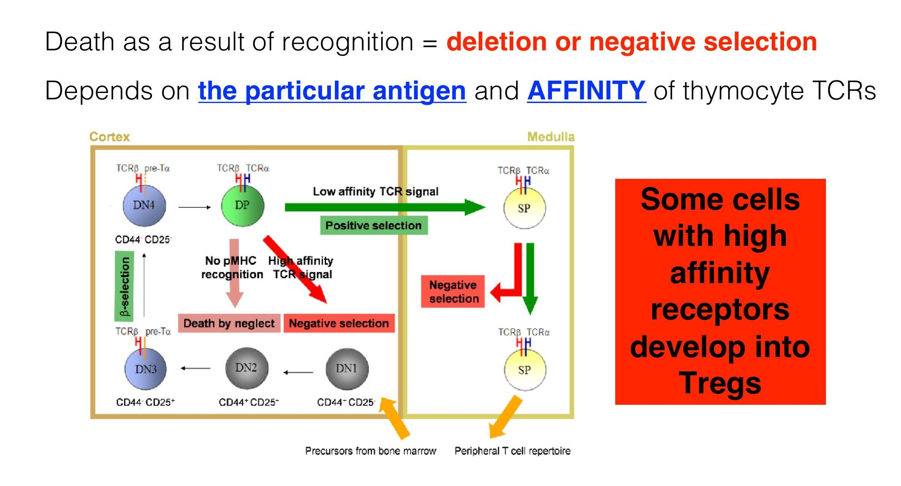
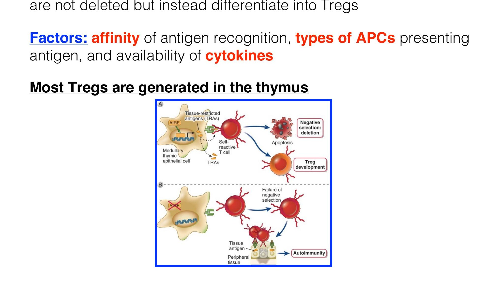
Antigens in the Thymus
Antigens presented in the thymus are mostly self — expressed by thymic cells or brought in by blood. Two cell types present self-antigens:
Express tissue-restricted antigens (TRAs) via macroautophagy — controlled by AIRE. Present on MHC I and II.
Carry endogenous antigens and serum-borne self-antigens. Transfer antigen to mTECs. Present on MHC I and II.
AIRE — Autoimmune Regulator
- Function
- Transcriptional regulator in mTECs that promotes expression of tissue-restricted antigens (TRAs) — peripheral antigens ectopically expressed in the thymus to enable central tolerance to those tissues.
- Mechanism
- AIRE drives expression of TRAs in mTECs → these antigens are presented to thymocytes → high-affinity self-reactive T cells are deleted or become Tregs.
- AIRE Mutation → APS-1
- Loss-of-function mutations cause Autoimmune Polyendocrine Syndrome Type 1 (APS1). Characterized by antibody- and lymphocyte-mediated injury to multiple endocrine organs: parathyroids, adrenals, and pancreatic islets. Mechanism: failure of negative selection → self-reactive T cells escape to periphery.
PLO 2 · PLO 4 · LO 1 · LO 3Peripheral T Cell Tolerance
Peripheral tolerance acts on mature lymphocytes that escaped central deletion. Three main mechanisms:
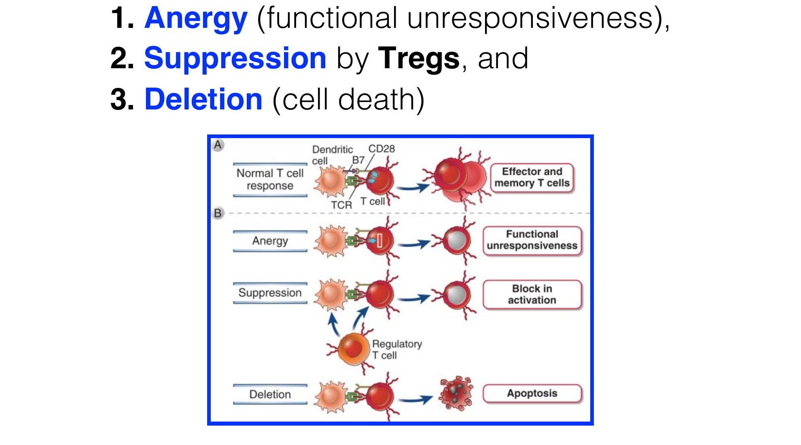
1. Anergy — Functional Unresponsiveness
Three mechanisms induce the anergic state:
- Prolonged Signal 1 without co-stimulation — TCR engagement (Signal 1) occurs but B7–CD28 co-stimulation (Signal 2) is absent (e.g., resting DCs present self antigen without danger signals). Result: reduced IL-2 production → no proliferation/differentiation.
- TCR-induced signal transduction is blocked — Ubiquitin ligases (e.g., Cbl-b, GRAIL) target TCR-associated proteins for degradation. No downstream signaling → no IL-2 → no T cell activation.
- Engagement of inhibitory receptors — Inhibitory receptors (e.g., CTLA-4) engage their ligands and terminate T cell response.
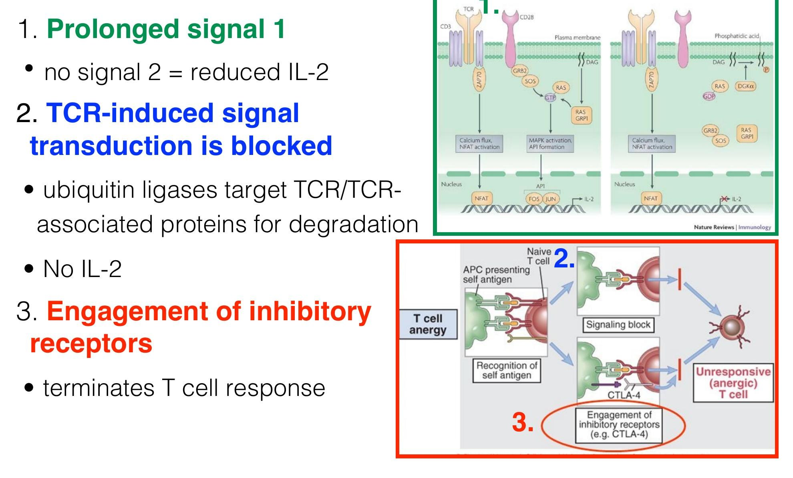
- Binds B7-1 (CD80/86) — same ligand as CD28 (the activating co-receptor)
- CTLA-4 has 10–20× higher affinity for B7 than CD28
- Competitively inhibits CD28 → removes B7 from APC surface → lack of co-stimulation → T cell unresponsiveness
- Expressed highly by both activated T cells and Tregs
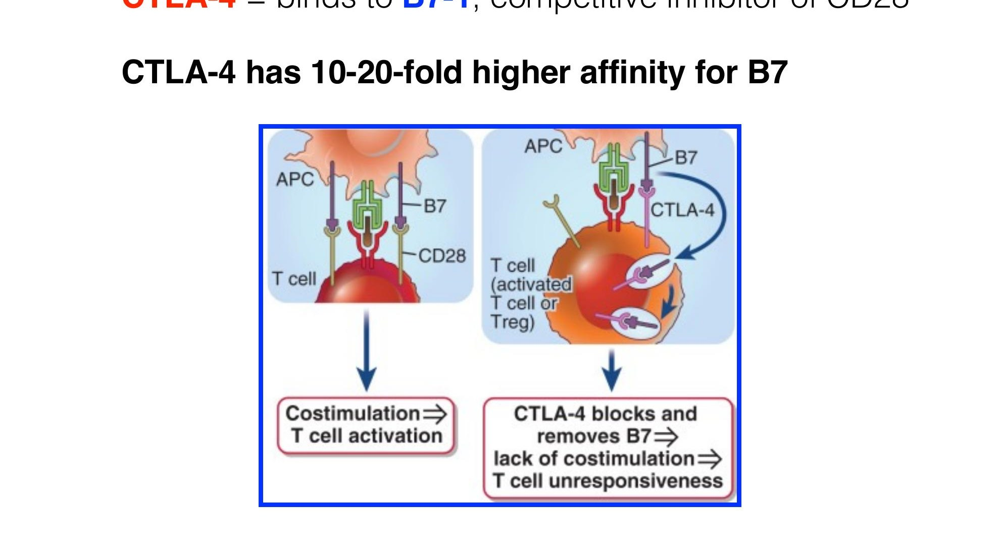
2. Suppression by Regulatory T Cells (Tregs)
Generation of Tregs
| Type | Origin | Antigen Specificity | Key Requirements |
|---|---|---|---|
| nTregs (natural/thymic) | Thymus | Primarily self antigens | High-affinity self-antigen + IL-2/IL-15 |
| pTregs (peripheral) | Periphery (from naïve CD4) | Self or foreign antigen | Antigen + IL-2, TGF-β, retinoic acid; absence of strong innate response |
Table quiz: Treg generation
- Which Tregs are generated in the thymus and are mainly specific for self antigens? nTregs.
- What cytokines are especially important for pTreg generation? IL-2 and TGF-β, with retinoic acid helping in the right setting.
- CD4+ T cell subset
- High CD25 (IL-2Rα) — IL-2 is essential for Treg growth, survival, and function
- Transcription factor FoxP3 — master regulator of Treg identity
- High surface CTLA-4
FYI: plain-English explanation of IPEX terms
Big idea: FoxP3 is the master gene that lets Tregs work properly. If FoxP3 is mutated, the immune system loses an important "brake," so it starts attacking the body's own tissues.
- Immune dysregulation = the immune system is poorly controlled and attacks the wrong targets.
- Polyendocrinopathy = autoimmune disease affecting multiple hormone-producing glands.
- Enteropathy = disease of the intestines, often causing severe diarrhea.
- X-linked = the gene is on the X chromosome, so boys are often affected more severely.
- Loss of functional Tregs = the regulatory T cells cannot properly suppress self-reactive immune responses.
Shortcut to remember it: FoxP3 mutation → broken Tregs → loss of immune "brakes" → widespread autoimmunity.
Treg Mechanisms of Action
- Remove B7 from APCs via CTLA-4 — reduces APC ability to activate effector T cells.
- Consumption of IL-2 — Tregs express very high CD25; outcompete effector T cells for IL-2 → deprives other cells of this proliferation/survival signal.
- Secretion of immunosuppressive cytokines — primarily IL-10 and TGF-β.
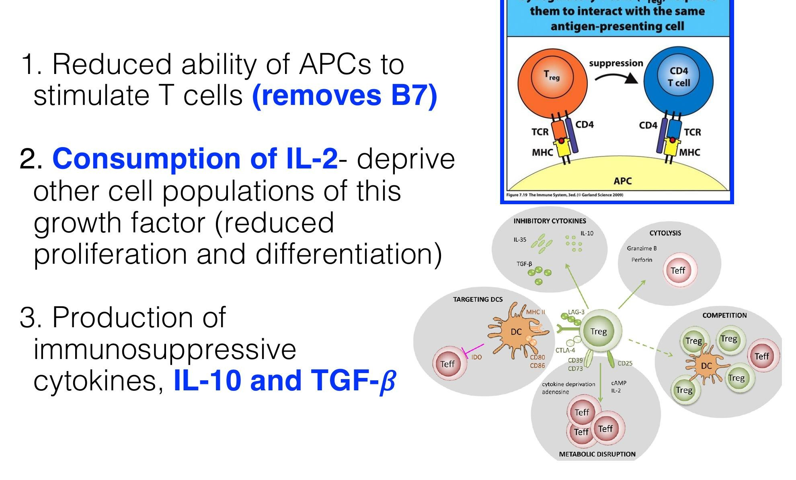
- Produced by macrophages, DCs, Tregs, Th2, some B cells (Bregs)
- Inhibits activated macrophages and DCs
- Inhibits IL-12 production by DCs/macrophages
- Inhibits costimulator and MHC II expression on APCs
- IL-10 LOF → severe IBD
- Produced primarily by CD4 Tregs
- Inhibits T cell proliferation and effector function
- Inhibits macrophage activation
- Stimulates IgA production by B cells
- Promotes tissue repair after inflammation
3. Deletion — Peripheral Apoptosis
T cells that repeatedly encounter self antigen with high affinity die by apoptosis via two main pathways:
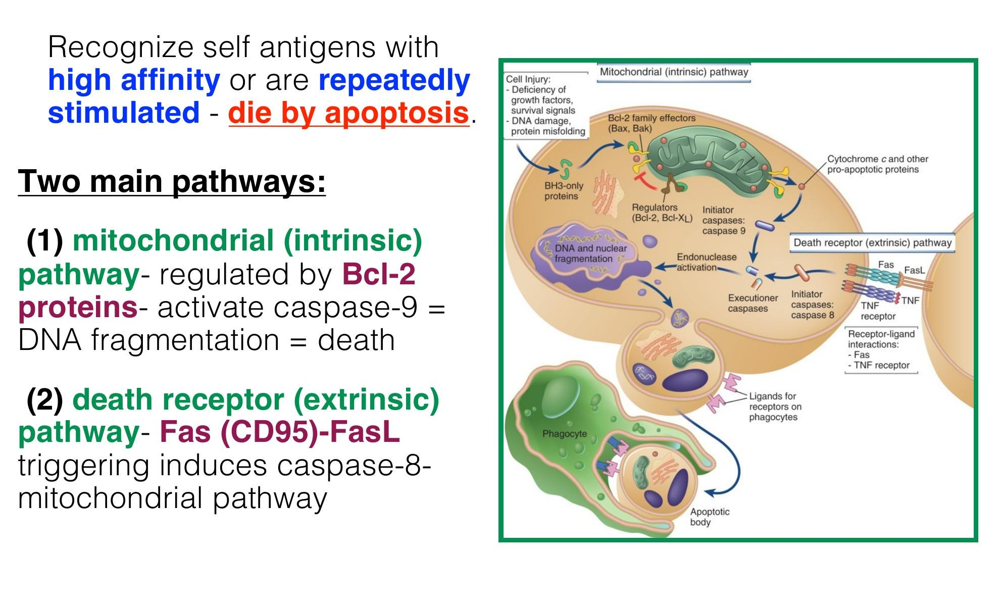
| Pathway | Trigger | Key Molecules | Caspase |
|---|---|---|---|
| Mitochondrial (Intrinsic) | Deficiency of survival signals; repeated stimulation | Bcl-2 family (Bcl-2, Bcl-XL inhibit; Bax, Bak promote) | Caspase-9 → executioner caspases → DNA fragmentation |
| Death Receptor (Extrinsic) | Fas–FasL (CD95) interaction | Fas (CD95) on T cell, FasL on activated T cell or other cells | Caspase-8 → feeds into mitochondrial pathway |
Table quiz: peripheral deletion
- Which caspase is classically associated with the intrinsic mitochondrial pathway? Caspase-9.
- What receptor-ligand pair drives the extrinsic pathway here? Fas with FasL.
LO 1B Cell Tolerance — Central & Peripheral
B cells must be tolerant to both T-dependent (protein) and T-independent (polysaccharide, lipid) self-antigens. Central tolerance occurs in the bone marrow on immature B cells.
Central B Cell Tolerance (Bone Marrow)
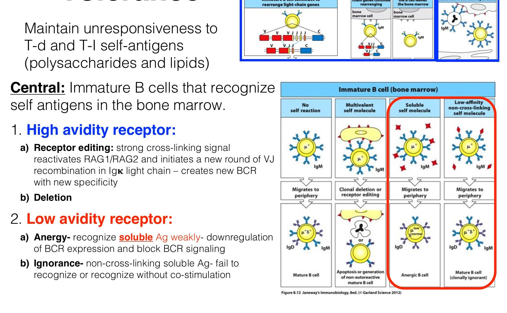
| Receptor Avidity | Mechanism | Detail |
|---|---|---|
| High-Avidity BCR | Receptor Editing | Strong cross-linking signal reactivates RAG1/RAG2; new round of VJ recombination in Ig-κ light chain → creates BCR with new (non-self) specificity. Most common first-line response. |
| Deletion (Clonal) | If receptor editing fails → apoptosis of immature B cell. | |
| Low-Avidity BCR | Anergy | Recognize soluble antigen weakly → downregulation of BCR expression and block of BCR signaling → anergic B cell migrates to periphery. |
| Ignorance | Non-cross-linking soluble antigen → B cell fails to recognize or recognizes without co-stimulation → migrates to periphery as clonally ignorant. |
Table quiz: central B cell tolerance
- What is the most common first response of a high-avidity immature B cell to self antigen? Receptor editing.
- What low-avidity outcome is associated with soluble self antigen? Anergy.
Peripheral B Cell Tolerance
Mature B cells encountering self-antigen in peripheral tissues without T cell help are rendered unresponsive or die. Peripheral tolerance also eliminates autoreactive clones generated by somatic hypermutation in germinal centers.
- Only Signal 1 (BCR ligation) — no T cell help, no innate co-stimulation
- Engagement of inhibitory receptors (FcγRIIB, PD-1) → raises activation threshold
Self antigen only engages BCR; foreign antigen additionally engages co-receptors, innate receptors, and Th cells.
High-avidity BCR binding to self-antigen → apoptotic death.
T Cell vs B Cell Tolerance — Side-by-Side
| Feature | T Cell | B Cell |
|---|---|---|
| Generative organ | Thymus | Bone marrow |
| First-line central mechanism (high affinity) | Negative selection (deletion) | Receptor editing |
| Alternative central outcome (high affinity) | Treg development | Deletion |
| Low-affinity central mechanism | Anergy / ignorance | Anergy / ignorance |
| Peripheral: anergy mechanism | No signal 2; inhibitory receptors (CTLA-4) | Signal 1 only; inhibitory receptors (FcγRIIB, PD-1) |
| Peripheral: suppression | Tregs (IL-10, TGF-β, B7 removal) | Indirectly via Tregs; Bregs (IL-10) |
| Peripheral: deletion | Fas–FasL; mitochondrial pathway | High-avidity apoptosis; GC-generated autoreactive clones |
| Unique feature | AIRE enables TRA expression in thymus | Somatic hypermutation can generate new autoreactive BCRs (caught by peripheral tolerance) |
Table quiz: T cell vs B cell tolerance
- What unique central tolerance mechanism is especially important for B cells but not T cells? Receptor editing.
- What unique thymic feature helps T cells become tolerant to peripheral tissue antigens? AIRE-driven TRA expression.
LO 4 · LO 5Factors, Triggers & Genetics of Autoimmunity
Factors Determining Tolerogenicity vs Immunogenicity
| Property | → Immune Response (Immunogenic) | → Tolerance (Tolerogenic) |
|---|---|---|
| Persistence | Short-lived (eliminated by immune response) | Prolonged → persistent antigen receptor engagement |
| Location / Portal of Entry | Subcutaneous, intradermal; absent from generative organs | Intravenous, mucosal; present in generative organs |
| Adjuvants / Co-stimulation | Antigen + adjuvants → stimulate helper T cells | Antigen without adjuvants → absence of co-stimulation |
| APC Maturation | Mature DCs: high costimulators & cytokines | Immature (resting) DCs: low costimulators & cytokines |
Table quiz: tolerogenic vs immunogenic signals
- Does antigen without adjuvant usually favor immunity or tolerance? Tolerance.
- Which APC state is more tolerogenic: mature or immature DCs? Immature resting DCs.
Immunologic Abnormalities Leading to Autoimmunity
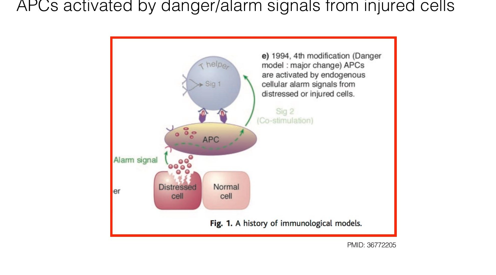
- Defect in deletion in generative lymphoid organs (central tolerance)
- Defect in deletion of mature self-reactive lymphocytes (peripheral)
- Defect in number or function of Tregs
- Inadequate function of inhibitory receptors (e.g., CTLA-4)
- Neoantigens
- Post-translational modifications (e.g., citrullination via PAD enzymes in RA) create new epitopes the immune system has not been tolerized to.
- Cryptic Epitopes
- Normally hidden epitopes exposed upon antigen processing or protein conformational change (e.g., IgG Fc carbohydrate structures exposed upon epitope binding → rheumatoid factor).
- Sequestered Antigens
- Antigens in immunologically privileged sites (brain, eye, testis, uterus/fetus) are not normally seen by lymphocytes. Trauma → antigen release → immune activation. Example: sympathetic ophthalmia (eye trauma → bilateral autoimmunity).
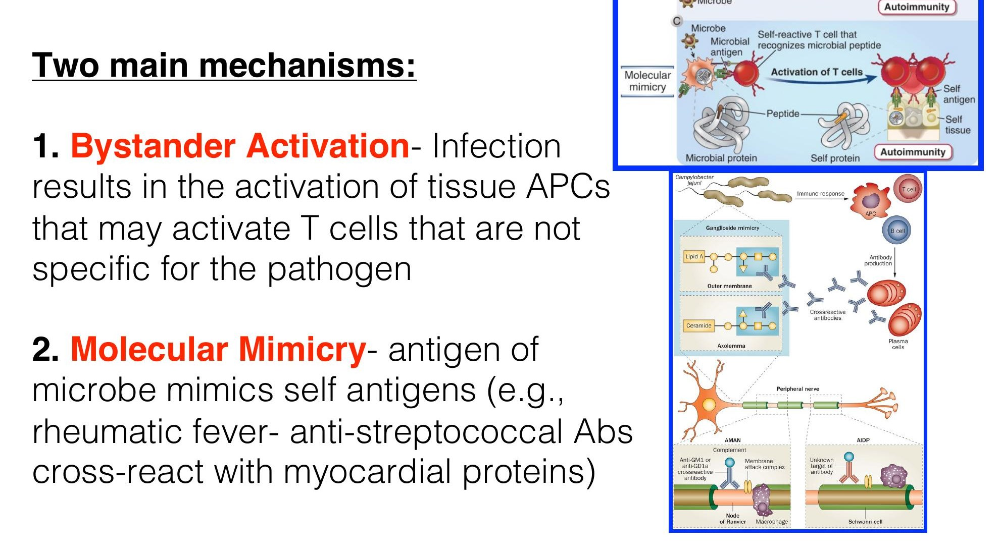
- Bystander Activation
- Infection activates tissue APCs that upregulate co-stimulators → activates self-reactive T cells present in the tissue (that were previously anergic due to lack of Signal 2). The T cells are not specific for the pathogen.
- Molecular Mimicry
- Microbial antigen structurally resembles self-antigen → immune response to pathogen cross-reacts with self tissue. Classic example: Acute Rheumatic Fever — anti-streptococcal antibodies cross-react with myocardial proteins → arthritis, myocarditis, heart valve scarring.
LO 5Genetic Basis of Autoimmunity
Autoimmune diseases are largely polygenic — individuals inherit multiple polymorphisms that contribute to susceptibility. These interact with environmental triggers.
MHC / HLA Associations
The strongest genetic associations are with MHC genes. Certain HLA alleles occur at higher frequency in patients vs. the general population. Examples:
| Disease | HLA Allele | Odds Ratio |
|---|---|---|
| Ankylosing Spondylitis (AS) | B*27 (mainly B*2705, B*2702) | 100–200 |
| T1D (heterozygotes) | DRB1*0301/0401 | 35 |
| RA (2 SE alleles) | DRB1, 2 SE alleles | 12 |
| T1D | DRB1*0401 haplotype | 8 |
| Celiac Disease | DQA1*0501-DQB1*0201 | 7 |
| T1D | DRB1*0301 haplotype | 4 |
| RA (1 SE allele) | DRB1, 1 SE allele | 4 |
| Multiple Sclerosis | DRB1*1501 | 3 |
| SLE | DRB1*0301 | 2 |
Table quiz: HLA associations
- Which disease in this table has the strongest HLA association? Ankylosing spondylitis with B*27.
- Which autoimmune disease here is linked to DRB1 shared epitope alleles? Rheumatoid arthritis.
Key Single-Gene Mutations
| Gene | Normal Function | Mechanism of Tolerance Failure | Human Disease |
|---|---|---|---|
| AIRE | TRA expression in thymic mTECs | Failure of central T cell tolerance | APS-1 (parathyroids, adrenals, pancreatic islets) |
| FoxP3 | Treg master transcription factor | Deficiency of functional Tregs | IPEX syndrome |
| CTLA4 | T cell inhibition; Treg function | Defective T cell anergy; impaired Treg function | Systemic inflammatory disease; T1D, RA |
| Fas / FasL | Death receptor pathway | Defective peripheral deletion of self-reactive T and B cells | ALPS (Autoimmune Lymphoproliferative Syndrome) |
| IL-2 / IL-2Rα/β | T cell activation; Treg maintenance | Defective Treg development, survival, function | IBD, autoimmune hemolytic anemia (mouse); human associations with MS, T1D |
| IL-10 / IL-10R | Mucosal immune suppression | Defective control of mucosal immune responses | Severe IBD / Colitis |
| C4 (complement) | Clearance of immune complexes & apoptotic bodies | Defective immune complex clearance; failure of B cell tolerance | SLE |
Table quiz: single-gene mutations
- Which mutation causes failure of central T cell tolerance in the thymus? AIRE mutation.
- Which mutation causes defective Treg function and leads to IPEX syndrome? FoxP3 mutation.
LO 6Hypersensitivity Reactions & Autoimmunity
Type II — Antibody-Mediated (Anti-Cell Surface / Matrix Antigens)
Primarily mediated by IgM, IgG, and complement. Antigen is cell-surface or matrix-bound.
Abs bind cell surface → activate complement → MAC formation → cell lysis OR opsonization → phagocytosis.
IgG-coated target cells recognized by NK cells via FcγRIII → target cell killing.
Antibodies can block or stimulate receptor function without destroying the cell. Example: Graves' disease — anti-TSH receptor Ab acts as TSH agonist → unregulated thyroid hormone overproduction → hyperthyroidism.
| Autoimmune Disease | Autoantigen | Consequence |
|---|---|---|
| Autoimmune hemolytic anemia | Rh blood group / I antigen | RBC destruction → anemia |
| Autoimmune thrombocytopenia purpura | Platelet integrin gpIIb:IIIa | Abnormal bleeding |
| Goodpasture's syndrome | Type IV collagen (GBM) | Glomerulonephritis, pulmonary hemorrhage |
| Pemphigus vulgaris | Epidermal cadherin | Blistering of skin |
| Acute rheumatic fever | Streptococcal cell wall (cross-reacts with cardiac muscle) | Arthritis, myocarditis, heart valve scarring |
| Graves' disease | TSH receptor | Hyperthyroidism (receptor stimulation) |
| Myasthenia gravis (MG) | Acetylcholine receptor (AChR) | Progressive weakness (receptor blockade + complement destruction at NMJ) |
| Hashimoto's disease (Type II component) | TPO, thyroglobulin, TSHR | Thyroid cell destruction |
Table quiz: Type II autoimmune diseases
- Which Type II disease in this table is caused by antibody stimulation rather than destruction? Graves' disease.
- Which disease targets the acetylcholine receptor at the NMJ? Myasthenia gravis.
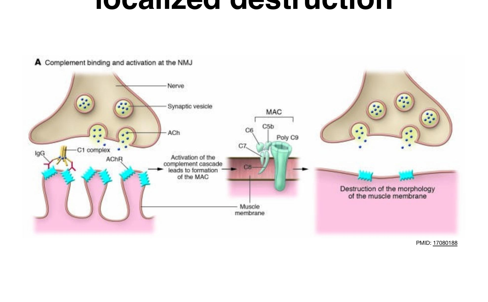
Type III — Immune Complex–Mediated
Mediated by soluble immune complexes (mostly IgG). The antigen is soluble (not cell-bound). Complexes deposit in tissues → activate complement → inflammation.
| Disease | Autoantigen | Consequence |
|---|---|---|
| Systemic Lupus Erythematosus (SLE) | DNA, histones, ribosomes, snRNP, scRNP | Glomerulonephritis, vasculitis, arthritis |
| Mixed essential cryoglobulinemia | Rheumatoid factor IgG complexes (± Hep C antigens) | Systemic vasculitis |
Table quiz: Type III diseases
- What is the key immunologic problem in Type III hypersensitivity? Deposition of soluble immune complexes in tissues.
- Which classic systemic autoimmune disease in this table is Type III? SLE.
Type IV — Cell-Mediated (Delayed-Type Hypersensitivity, DTH)
CD4+ T cells (Th1) → secrete IFN-γ → macrophage activation, cytokine-mediated inflammation and tissue damage.
CD8+ CTLs → direct target cell lysis via perforin/granzyme + cytokine-mediated inflammation.
Classic DTH examples: contact dermatitis, tuberculin (PPD) skin test, granuloma formation in TB, graft rejection.
| Autoimmune Disease | Autoantigen | Consequence |
|---|---|---|
| Type 1 Diabetes (T1D) | Pancreatic β-cell antigen (insulin, etc.) | β-cell destruction → insulin deficiency |
| Rheumatoid Arthritis (RA) | Unknown synovial joint antigen | Joint inflammation and destruction |
| Multiple Sclerosis (MS) | Myelin basic protein, proteolipid protein | Brain degeneration, paralysis |
| Hashimoto's thyroiditis | TPO, thyroglobulin (Tg), TSHR | Thyroid cell destruction → hypothyroidism |
Table quiz: Type IV diseases
- Which cells are the main effectors in Type IV hypersensitivity? T cells and macrophages.
- Which disease here is caused by destruction of pancreatic beta cells? Type 1 diabetes.
Comparison: Types II, III, IV
| Feature | Type II | Type III | Type IV (DTH) |
|---|---|---|---|
| Mediator | IgG, IgM + complement | Soluble immune complexes (IgG) | T cells (CD4 & CD8), macrophages |
| Antigen location | Cell surface or matrix | Soluble | Tissue/cell-associated |
| Mechanism | Complement lysis, ADCC, receptor dysfunction | Complement activation at deposition sites | Cytokine inflammation; direct CTL killing |
| Timing | Minutes–hours | Hours–days | 48–72 hours (delayed) |
| Key diseases | Graves', MG, Goodpasture's, hemolytic anemia | SLE, cryoglobulinemia | T1D, MS, RA, Hashimoto's |
Table quiz: compare Types II, III, and IV
- Which hypersensitivity type is delayed for 48–72 hours? Type IV.
- Which type is driven by soluble immune complexes rather than cell-surface antigen or T cells? Type III.
Quick ReferenceMaster Summary
| Phase | T Cell | B Cell |
|---|---|---|
| Central |
1. Deletion (negative selection) 2. Treg development |
1. Receptor editing (high avidity) 2. Deletion 3. Anergy (soluble Ag) 4. Ignorance (non-crosslinking Ag) |
| Peripheral |
1. Anergy (↓ IL-2, CTLA-4, blocked TCR signaling) 2. Suppression by Tregs (IL-10, TGF-β, B7 removal) 3. Deletion (Fas-FasL; mitochondrial pathway) |
1. Anergy (Signal 1 only; inhibitory receptors) 2. Deletion (high avidity → apoptosis) 3. Ignorance |
Table quiz: master tolerance summary
- What is the key peripheral suppressive mechanism for T cells? Tregs using IL-10, TGF-β, and B7 removal.
- Which central B cell mechanism comes before deletion when self-reactivity is high? Receptor editing.
Bystander Activation
Infection → APC activation → upregulation of co-stimulators → activation of anergic self-reactive T cells in the same tissue. T cells need NOT be specific for pathogen.
Molecular Mimicry
Microbial epitope structurally similar to self → immune response cross-reacts with self tissue.
e.g., GAS → rheumatic fever → cross-reactive cardiac Abs.
Block 5 · Autoimmunity · Dr. Diana Goode · Notes aligned to PLOs & LOs